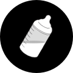
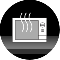
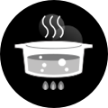

조리를 투명하게, 요리를 건강하게
Visions
독특한 갈색 유리 재질 – 글라스 세라믹 소재
생각의 틀을 깬 발상으로 속이 들여다 보이는 새롭고 세련된 디자인으로 주부들에게 큰 호 응을 얻었습니다. 자연 소재인 글라스 세라믹으로 만들어져‚ 조리
용기에서 검출될 수 있는 유해성분으로부터 안전하여 안심하고 사용할 수 있습니다. 특히‚ 건강에 유의해야하는 아기나 환자들을 위한 이유식과 유동식을
조리할 때 안심하고 사용할 수 있습니다.
Why Visions
비젼이 사랑받는 이유
속이보여 시원한, 친환경 안전소재
갈색재질의 속이 들여다보이는 세련된 디자인과 유해성분으로부터
안전한 소재
찌게, 탐, 찜 등 여러가지 종류의 국물 요리 등 각 요리에 맞게 사용할 수 있는 다양한 사이즈의 용기를 선보입니다. 특히 국물이 많은 음식을 즐기는 한국인들을 위해 특별히 연구 개발 된 깊은 양수 냄비는 조리시 국물을 넘치치 않아 좋습니다. 자연 소재인 글라스 세라믹으로 만들어져 이유식, 환 자식 등 건강한 요리를 위해 사용 되고 있습니다. 뿐만 아니라 보온성이 뛰어나 음식을 오랫동안 따뜻하게 즐길 수 있도록 도와줍니다.
-

환경호르몬 없이
안전한 -
이음이 없어 세척용이
냄새나음식이 배지않음 -

오븐,전기렌지
모두가능 -

식사 내내 따뜻하게
뜨거운 불 속에서도 끄덕없는 놀라운 내열성
열에 뛰어난 글라스 세라믹으로 단단하게 그러나 안전하게
글라스 세라믹은 열로 인한 충격을 견뎌내는 내열성이 뛰어나 위성 및 통신 수단에 필요한 주요 재질로 적합해 미국 우주 연구에 쓰여졌으며‚ 스페이스 미사일의 탄두 부분에 사용되는 등 그 특성이 입증된 소재입니다. 비젼의 내열성은 어떠한 조리 용기 보다 탁월하여 급격한 온도 변화에도(-50 ~1000 ) 안전하며 냉장고에서 꺼내 바로 열에 조 리해도 될 만큼 견고하고 열에 강합니다.

Visions Line
비젼의 제품 라인을 소개합니다.
Classic
세련된 디자인의 깨끗한 건강 조리용기 비젼 클래식.
클래식과 리버스 워딩중복//천연 재질의 글라스 세라믹으로 만들어 자연소재인 글라스 세라믹 소재로 만들어져 유해성분으로부터 안전하여 안심하고 사용 하실수 있고, 음식물이 끼거나 냄새 배임이 없고, 오랜 시간 조리하는 요리가 제격입니다. 급격한 온도변화에 강해 직화, 냉동, 냉장, 오븐 등 사용이 가능하며 이음새 없는 일체형으로 위생적이고 세척에 용이합니다.
제품보기Diamond
새로운 커팅 엣지 기술로 이전보다 더욱 가볍고 투명도를 높인
비젼 다이아몬드
기존 ‘비젼’보다 맑은 유리 색상으로 프리미엄 라인에 속하는 ‘비젼 다이아몬드’입니다. 새로운 커팅 엣지 기술로 보다 가볍고 투명해서 요리가 잘 보이며, 작은 냄비일수록 높이가 낮아서 요리 초심가에게 추천하는 라인입니다.
제품보기Flair
사용자 편의성을 높인 인체공학적 손잡이와
바디 곡면을 더욱 강조한 모던한 디자인의 비젼 플레어.
좀 더 심플한 디자인의 ‘비젼’이 가지고 싶었다면 똑 떨어지는 라인이 보기 좋은 ‘비젼 플레어’를 추천합니다. ‘비젼’특유의 갈색 유리 색상은 그대로 지키면서 뚜껑의 라인과 손잡이 각도 등 디테일을 다르게 디자인하여 편리함을 더했습니다.
제품보기Reverse
모던한 사각 형태의 디자인을 적용하여
더욱 모던하게 탄생한 비젼 리버스
비젼 4개 라인상세정보 워딩중복//천연 재질의 글라스 세라믹으로 만들어 자연소재인 글라스 세라믹 소재로 만들어져 유해성분으로부터 안전하여 안심하고 사용 하실수 있고, 음식물이 끼거나 냄새 배임이 없고, 오랜 시간 조리하는 요리가 제격입니다. 급격한 온도변화에 강해 직화, 냉동, 냉장, 오븐 등 사용이 가능하며 이음새 없는 일체형으로 위생적이고 세척에 용이합니다
제품보기